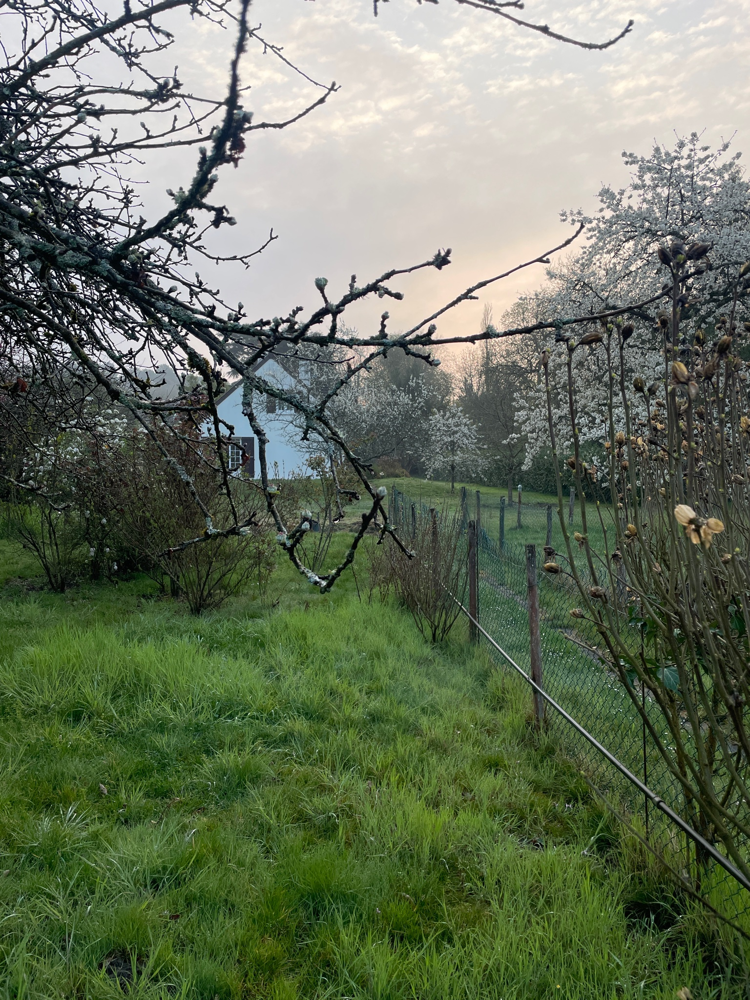

🌿 Now
I try to keep up with reading. I'm also trying to improve my routine.
Moving out of Paris
I moved to the Fontainebleau area in June 2020, after spending 2 months in my small Paris flat with a 4-year-old and a newborn. The forest is a 2-min walk away. I now have the time and headspace to watch the seasons pass and my children grow.
2022 update We've bought a house! There's a lot of work ahead of us, but isn't it a nice place already?

Gardening
With the new house in need of serious landscaping, I am rekindling my passion for gardening! I am particularly interested in so-called naturalistic gardening which is all about making visitors feel as if your garden was wild (which is obviously not the case, most natural spaces are way too chaotic). The idea is to have a garden that does not require watering at all, and if it does, to water using water that was collected during rainfalls.
Injury
I tore my Achilles tendon playing tennis in Feburary; I can now walk almost normally but am still unable to run. This has forced me back to the kind of contemplative life I lived when I was a PhD student. I'd almost say it was all worth it.
Other intellectual wanderings
- I keep coming back to macroeconomics
- I am reading more and more history
- I am currently obsessed with relational programming
- Democracy
- The monetary system